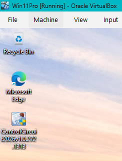
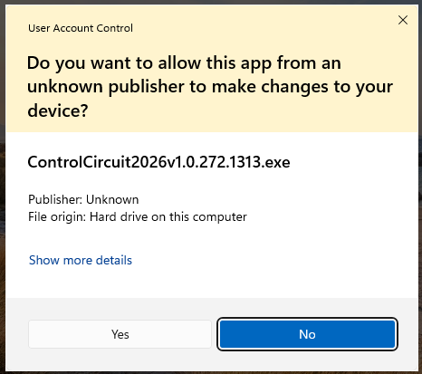
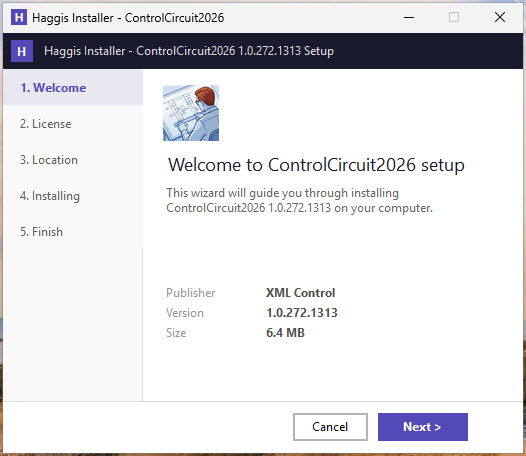
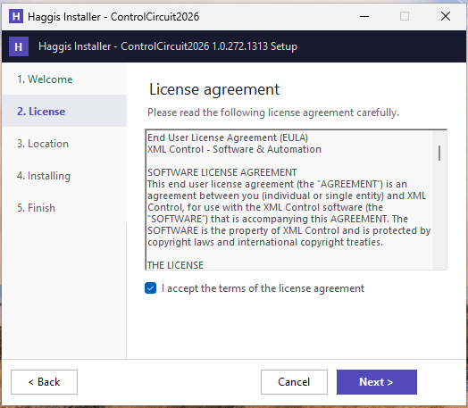
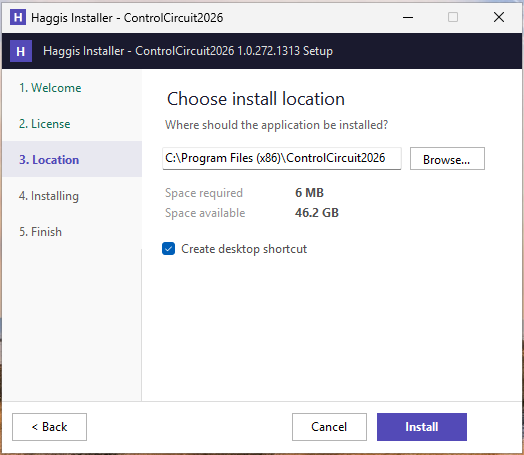
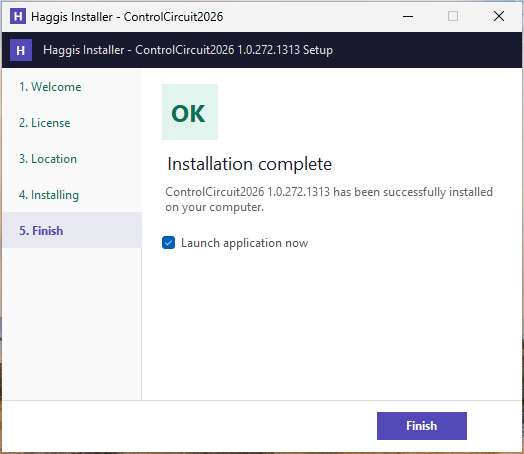
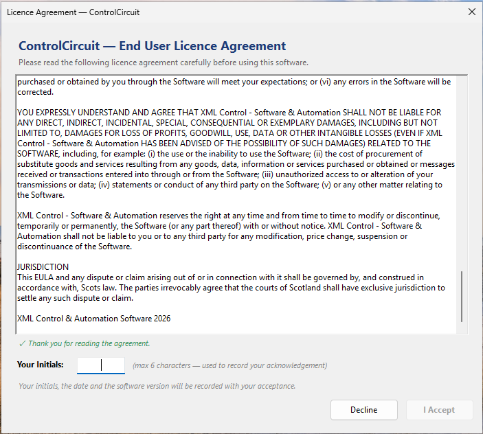
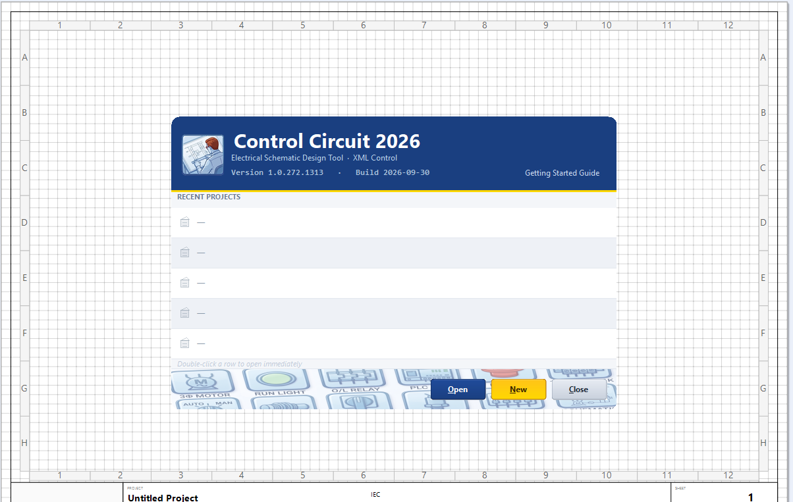

Control Circuit 2026 › Installation
Control Circuit installs like any other Windows program: one setup file, a short wizard, and a desktop shortcut. The screenshots below were taken in a fresh Windows 11 virtual machine, and the steps are identical on a real PC.
Program Files, so Windows will ask for permission once.Copy the setup file to your Desktop (or any folder on your own drive) before you run it.
The file name carries the version, so it will look like ControlCircuit2026v1.0.272.1313.exe.

Windows asks whether you want to allow the app to make changes to your device. Choose Yes.
It may name the publisher as Unknown. That is expected for now: the setup file is not yet digitally signed, which is a separate step from being safe to run.

The setup wizard opens on a short welcome page that shows the version you are about to install, who publishes it, and its size. The steps are listed down the left. Choose Next.

Read the End User Licence Agreement, tick I accept the terms of the license agreement, then choose Next. You cannot install without accepting.

The default location is C:\Program Files (x86)\ControlCircuit2026, and for nearly everybody that is the right answer.
The page also shows the space required and the space available on that drive.
Create desktop shortcut is ticked for you. Choose Install.

The install takes a few seconds. When it reports Installation complete, leave Launch application now ticked and choose Finish.

The first time Control Circuit starts, it shows the licence agreement again, this time for you to sign. Scroll to the end; a green Thank you for reading the agreement appears once you have. Type your initials (up to six characters) and choose I Accept.
Your initials, the date and the software version are recorded with your acceptance. You are only asked once for each version.

Control Circuit opens on its start screen. The Recent Projects list is empty because you have not made one yet. The version and build date are shown at the top, which is the first thing to quote if you ever need help.
You are ready. Choose New to begin.

Start the Tutorial: Chapter 1, Your First Project, which begins at exactly this screen.